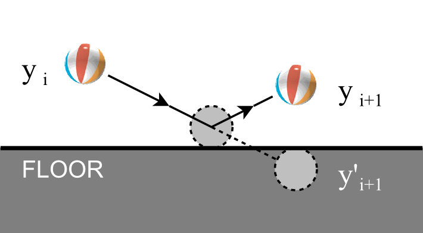
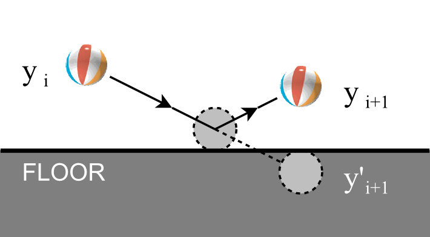

- Sequenza di elementi, dello stesso tipo
- L'intera lista (slice) può essere assegnata ad una variabile, così diamo un nome alla lista
- I singoli elementi sono numerati
- Gli indici partono da 0!
toBuy := []string{"spam", "eggs", "beans"}
rainfallData := []int{13, 24, 18, 15}
resultsByMonth := make([]int, 12) // 12 times 0


 
